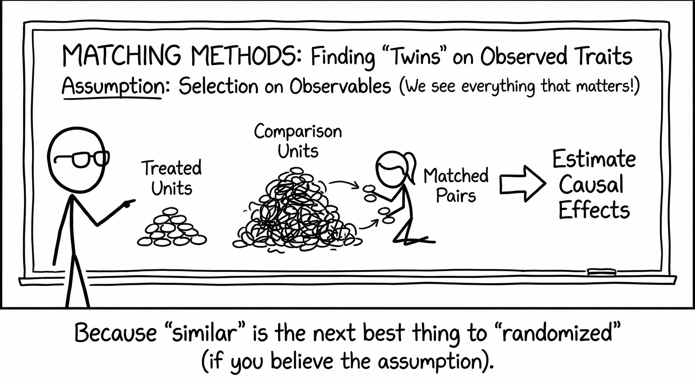
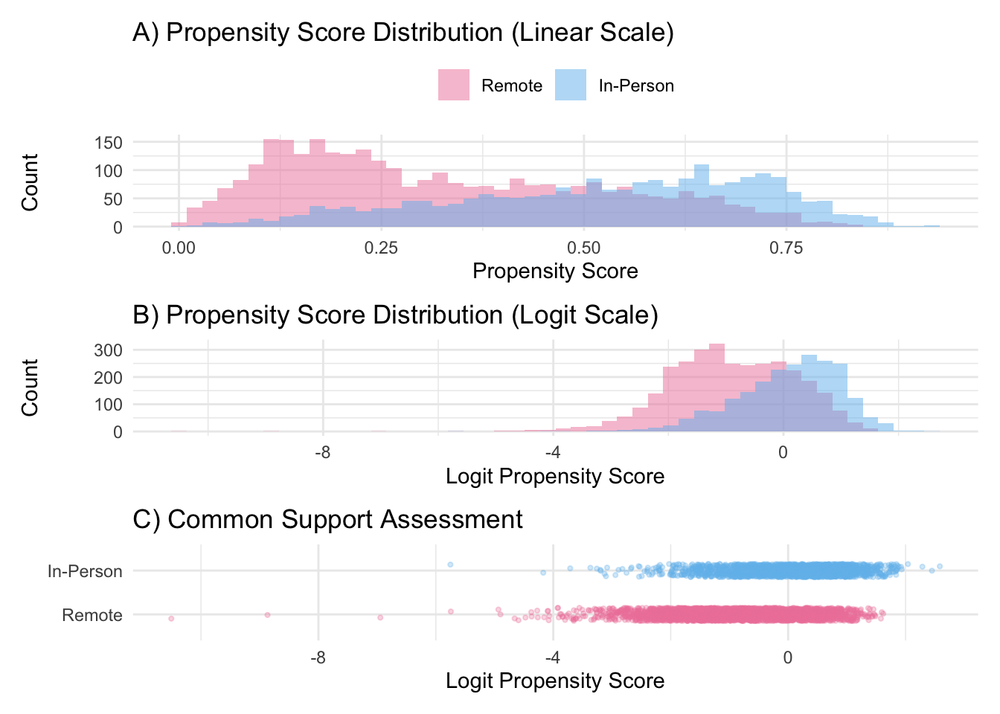
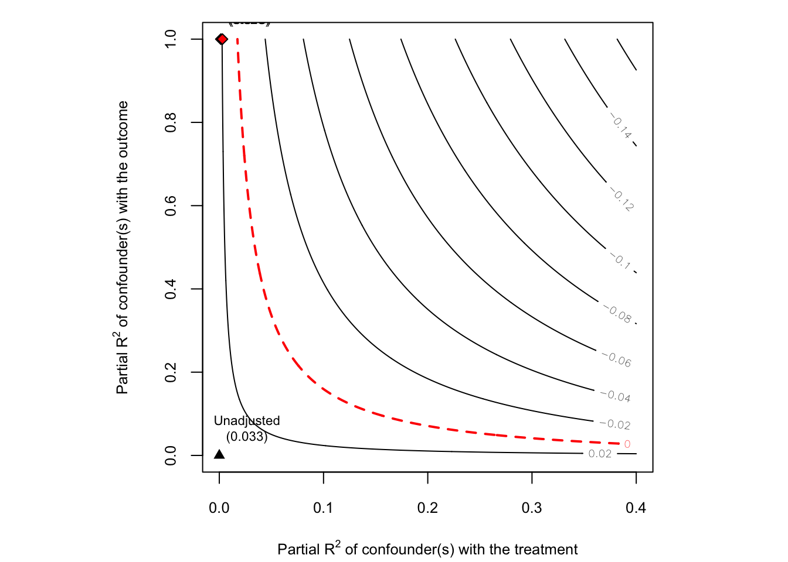

Observational data rarely cooperate with our causal questions because treatment groups differ systematically from controls, confounding threatens validity, and randomization isn’t an option. Matching methods offer a principled solution: reconstruct the experiment you wish you’d run by explicitly pairing treated units with controls that look identical on observed characteristics.
This tutorial introduces the statistical foundations of matching methods, walks through practical implementation in R using propensity score and Mahalanobis distance approaches, and demonstrates doubly-robust estimation with a real-world example examining COVID-19 instructional modality effects on student achievement.

1. Introduction
In observational studies where treatment assignment is not randomized, matching methods provide a powerful approach to estimate causal effects under the assumption of selection on observables. The core idea is deceptively simple: for each treated unit, find comparison units that look similar on observed pre-treatment characteristics. By comparing outcomes between these matched groups, we can estimate treatment effects while controlling for observed confounding.
1.1 The Fundamental Challenge
Recall from the Potential Outcomes framework that causal inference faces the fundamental problem: we can never observe both \(Y_i(1)\) and \(Y_i(0)\) for the same unit. Matching addresses this by finding units in the comparison group that are “similar enough” to treated units that we can plausibly treat their observed outcomes as proxies for the unobserved counterfactuals.
All units have a non-zero probability of receiving both treatment and control.
SUTVA: Treatment assignment of one unit does not affect potential outcomes of other units.
When these assumptions hold, we can identify causal effects by conditioning on (or matching on) observed covariates.
1.3 Why Match?
Matching offers several advantages:
Transparency: The matched sample is explicit—you can see exactly which units are being compared
Balance diagnostics: Easy to check whether treatment and control groups are comparable on observed covariates
Nonparametric: Unlike regression, matching doesn’t assume a particular functional form
Estimand flexibility: Can target ATE, ATT, or ATC depending on the matching approach
2. Types of Matching Methods
Matching methods vary along several key dimensions. Understanding these trade-offs is crucial for selecting the appropriate method for your analysis.
2.1 Subclassification (Stratification)
What it is: Partition the sample into \(J\) subclasses based on propensity scores or covariate values, then estimate treatment effects within each subclass.
What it is: “Coarsen” continuous variables into bins, then perform exact matching on the coarsened variables.
When to use:
When you want the interpretability of exact matching but have continuous covariates
When you’re willing to sacrifice some precision for transparency
Trade-offs:
More transparent than propensity score matching
Reduces model dependence
Monotonic imbalance bounding property (imbalance can only improve)
Results sensitive to coarsening choices
Can still leave many units unmatched
# CEM examplelibrary(MatchIt)m_cem <-matchit(treat ~ age + income + education,data = dat,method ="cem",cutpoints =list(age ="q5", # quintilesincome ="ss3")) # 3 equal-size bins
2.4 Propensity Score Matching
What it is: Match units based on their propensity score \(e(\mathbf{X}) = P(D=1 \mid \mathbf{X})\).
By Rosenbaum & Rubin (1983), conditional independence given \(\mathbf{X}\) implies conditional independence given \(e(\mathbf{X})\):
\[(Y_i(1), Y_i(0)) \perp\!\!\!\perp D_i \mid e(\mathbf{X}_i)\] This reduces matching from potentially high-dimensional \(\mathbf{X}\) to a single dimension.
2.4.1 Nearest Neighbor Matching
What it is: For each treated unit, find the \(k\) control units with the closest propensity scores.
Variants:
Greedy matching: Match units sequentially, making locally optimal choices
Optimal matching: Finds the global optimal matching that minimizes total distance
When to use:
1:1 matching without replacement: When you want a simple, interpretable matched sample for ATT
1:k matching: When you need better precision but have abundant controls
With replacement: When control pool is limited or when you want better balance
Trade-offs:
Easy to understand and implement
1:1 matching without replacement gives balanced sample sizes
Greedy algorithm can produce poor matches late in the sequence
Can match very dissimilar units if no caliper is used
# 1-to-1 nearest neighbor (greedy) without replacementm_nn <-matchit(treat ~ age + education + income,data = dat,method ="nearest",distance ="glm",replace =FALSE,ratio =1,m.order ="largest", # match highest PS firstestimand ="ATT")# With a caliperm_nn_cal <-matchit(treat ~ age + education + income,data = dat,method ="nearest",distance ="glm",caliper =0.1, # 0.1 SD of logit(PS)replace =FALSE,estimand ="ATT")# Optimal matchingm_opt <-matchit(treat ~ age + education + income,data = dat,method ="optimal",distance ="glm",ratio =1,estimand ="ATT")
2.4.2 Radius/Caliper Matching
What it is: Match treated units only to controls within a specified radius (caliper) on the propensity score.
When to use:
When you want to avoid poor-quality matches
When common support violations are a concern
Trade-offs:
Ensures match quality by excluding bad matches
Can use all controls within the caliper (not just nearest)
May leave treated units unmatched
Results sensitive to caliper width choice
# Basic radius matching: match all controls within caliperm_radius <-matchit(treat ~ age + education + income,data = dat,method ="nearest",distance ="glm",caliper =0.1, # 0.1 SD of logit(PS)std.caliper =TRUE, # standardize caliperreplace =TRUE, # allow control reuseestimand ="ATT")# Stricter caliper (fewer poor matches)m_radius_strict <-matchit(treat ~ age + education + income,data = dat,method ="nearest",distance ="glm",caliper =0.05, # tighter radiusstd.caliper =TRUE,replace =TRUE,estimand ="ATT")# Radius matching without replacement (each control used once)m_radius_norep <-matchit(treat ~ age + education + income,data = dat,method ="nearest",distance ="glm",caliper =0.1,std.caliper =TRUE,replace =FALSE, # no reuseestimand ="ATT")# Check how many treated units were matchedsummary(m_radius)$nn # Shows matched/unmatched counts
2.4.3 Full Matching
What it is: Forms matched sets where each set contains either:
One treated unit and multiple controls, OR
One control unit and multiple treated units
When to use:
When you want to use all units in the sample
When estimating ATE (not just ATT)
When you have many more controls than treated units (or vice versa)
Trade-offs:
Uses full sample → no loss of statistical power
Optimizes overall balance across entire sample
Can estimate ATE, ATT, or ATC with appropriate weighting
More complex to implement and explain
Requires understanding of matching weights
# Full matchingm_full <-matchit(treat ~ age + education + income,data = dat,method ="full",distance ="glm",estimand ="ATE")# Quick matching (faster than optimal full)m_quick <-matchit(treat ~ age + education + income,data = dat,method ="quick",distance ="glm",estimand ="ATT")
2.5 Summary: Choosing a Matching Method
Method
Sample Size
Balance Quality
Complexity
Best For
Subclassification
Full sample
Moderate
Low
Initial exploration, transparency
Exact
Often small
Perfect (on matched vars)
Low
Few categorical covariates
CEM
Variable
Good
Low
Categorical + continuous covariates
1:1 NN
50% of sample
Variable
Low
Simple ATT estimation
1:1 NN + caliper
Variable
Good
Low
Quality-controlled ATT
k:1 Matching
Larger
Good (averaging reduces noise)
Moderate
Improving precision
Optimal
50% of sample
Good (globally optimal)
Moderate
Best 1:1 matches
Full
Full sample
Excellent (minimal distance)
High
ATE with all units
3. Distance Measures
The choice of distance metric fundamentally shapes which units are considered “similar.”
3.1 Propensity Score Distance
Definition: The propensity score \(e(\mathbf{X}) = P(D=1 \mid \mathbf{X})\) is typically estimated via logistic regression:
Definition: Accounts for correlations between covariates and different scales:
\[d_{ij} = \sqrt{(\mathbf{X}_i - \mathbf{X}_j)^T \mathbf{S}^{-1} (\mathbf{X}_i - \mathbf{X}_j)}\] where \(\mathbf{S}\) is the covariance matrix of \(\mathbf{X}\).
When to use:
When covariates are correlated
When you don’t trust the propensity score model
When you want to match directly on covariates
Advantages:
Scale-invariant
Accounts for covariate correlations
No need to model propensity score
Disadvantages:
Curse of dimensionality (difficult with many covariates)
\[d_{ij} = \sqrt{\sum_{k=1}^{K} \frac{(X_{ik} - X_{jk})^2}{\sigma_k^2}}\] Less commonly used as it doesn’t account for correlations.
3.4 Distance + Exact Matching
You can combine distance-based matching with exact matching on key variables:
# Exact match on gender and race, nearest neighbor on PSm_combo <-matchit(treat ~ age + education + income + race + gender,data = dat,method ="nearest",distance ="glm",exact =~ race + gender, # exact match on theseestimand ="ATT")
4. Doubly-Robust Estimation
One of the most powerful features of matching methods is that they can be combined with outcome regression to form doubly-robust (DR) estimators. This approach provides a “second chance” at consistent estimation.
4.1 The Doubly-Robust Property
A doubly-robust estimator requires specifying two models:
The key insight: If either model is correctly specified, the treatment effect estimate remains consistent, even if the other model is misspecified. This offers protection against model misspecification—a major concern in observational studies.
4.2 Mathematical Framework
For the ATT, a doubly-robust estimator takes the form:
The estimator is “doubly protected”: it only fails if both models are wrong.
4.4 Implementation Strategy
In practice, doubly-robust estimation after matching follows this workflow:
Step 1: Matching/Weighting - Estimate propensity scores: \(\hat{e}(\mathbf{X})\) - Create matched sample or weights - This addresses confounding via the treatment model
Step 2: Outcome Regression on Matched Sample - Fit: \(Y_i = \alpha + \tau D_i + \boldsymbol{\beta}'\mathbf{X}_i + \varepsilon_i\) - Include the same covariates used in matching - This addresses residual confounding via the outcome model
Step 3: G-Computation for Correct SE - Use marginaleffects::avg_comparisons() with appropriate vcov option - Cluster-robust SE if using matching with replacement - This accounts for matching structure
library(MatchIt)library(marginaleffects)# Step 1: Propensity score matchingmatch_obj <-matchit( treat ~ x1 + x2 + x3 + x4,data = dat,method ="nearest",distance ="glm",caliper =0.1,estimand ="ATT")# Step 2: Get matched datamd <-match.data(match_obj)# Step 3: Fit outcome model WITH covariates (doubly-robust)mod_dr <-lm( outcome ~ treat + x1 + x2 + x3 + x4,data = md,weights = weights # Use matching weights)# Step 4: Estimate ATT with g-computation and robust SEatt_dr <-avg_comparisons( mod_dr,variables ="treat",vcov ="HC3", # Robust SEnewdata =subset(treat ==1) # For ATT)print(att_dr)
4.5 Targeted Maximum Likelihood Estimation (TMLE)
Targeted Maximum Likelihood Estimation (TMLE) represents the state-of-the-art in doubly-robust estimation. While standard AIPW combines two models additively, TMLE iteratively updates the outcome model to optimize bias reduction for the specific causal parameter you’re estimating.
4.5.1 Why “Targeted”?
Standard maximum likelihood estimation optimizes the entire likelihood of the outcome model. But we don’t care about predicting \(Y\) perfectly—we only care about getting the causal effect right. TMLE “targets” the estimation procedure specifically toward the parameter of interest (ATE, ATT, etc.), achieving:
Asymptotic efficiency: Achieves the semiparametric efficiency bound (lowest possible variance)
Double robustness: Consistent if either model is correct
Finite sample bias reduction: Updates reduce bias even in small samples
Respect for bounds: Predictions stay within valid ranges (e.g., probabilities in [0,1])
4.5.2 The TMLE Algorithm
Step 1: Initial estimation
Fit outcome model: \(\hat{Q}_0(A, W) = E[Y \mid A, W]\)
Fit propensity score: \(\hat{g}(W) = P(A=1 \mid W)\)
Step 2: Clever covariate Construct the “clever covariate” \(H(A, W)\) based on the estimand:
For ATE: \(H(A,W) = \frac{A}{\hat{g}(W)} - \frac{1-A}{1-\hat{g}(W)}\)
For ATT: \(H(A,W) = A - \frac{(1-A)\hat{g}(W)}{1-\hat{g}(W)}\)
Step 3: Targeting step Update the initial outcome model by fitting: \[\text{logit}(\hat{Q}_1(A,W)) = \text{logit}(\hat{Q}_0(A,W)) + \epsilon \cdot H(A,W)\]
This fluctuation parameter \(\epsilon\) is chosen to eliminate residual confounding bias.
Step 5: Estimate causal effect The final targeted estimate: \[\hat{\psi}_{TMLE} = \frac{1}{n}\sum_{i=1}^n [\hat{Q}_1(1, W_i) - \hat{Q}_1(0, W_i)]\]
TMLE vs. Standard AIPW
Feature
Standard AIPW
TMLE
Estimation
Fit models independently
Iteratively update outcome model
Efficiency
Efficient only asymptotically
Efficient in finite samples
Bounded predictions
Can produce invalid predictions
Respects outcome bounds
Bias
First-order bias removed
Higher-order bias reduction
Machine learning
Compatible but suboptimal
Designed for ensemble methods
4.5.3 Implementation with Super Learner
TMLE shines when combined with Super Learner (ensemble machine learning), which automatically selects the best-weighted combination of algorithms:
library(tmle)library(SuperLearner)# Define candidate algorithms for ensembleSL.library <-c("SL.glm", # Logistic/linear regression"SL.glmnet", # Elastic net (LASSO/Ridge)"SL.gam", # Generalized additive models"SL.earth", # Multivariate adaptive regression splines"SL.ranger", # Random forest"SL.xgboost"# Gradient boosting)# Estimate ATE using TMLEtmle_ate <-tmle(Y = dat$outcome,A = dat$treat,W = dat[, c("x1", "x2", "x3", "x4")],Q.SL.library = SL.library, # Ensemble for outcome modelg.SL.library = SL.library, # Ensemble for PS modelfamily ="gaussian"# Continuous outcome)# Resultssummary(tmle_ate)# Extract key quantitiestmle_ate$estimates$ATE$psi # Point estimatetmle_ate$estimates$ATE$var.psi # Variancetmle_ate$estimates$ATE$CI # 95% CItmle_ate$estimates$ATE$pvalue # P-value
#For ATT Estimation# Create indicator for treated unitsdat$target_pop <-as.numeric(dat$treat ==1)# TMLE for ATTtmle_att <-tmle(Y = dat$outcome,A = dat$treat,W = dat[, c("x1", "x2", "x3", "x4")],Q.SL.library = SL.library,g.SL.library = SL.library,gbound =c(0.01, 0.99), # Trim extreme PS (avoid positivity violations)family ="gaussian")# For true ATT, manually calculate on treated unitsate_est <- tmle_att$estimates$ATE$psitreated_outcome <-mean(dat$outcome[dat$treat ==1])att_est <- ate_est # Under correct specification
# Diagnostics and Interpretation# Check Super Learner weights (which algorithms were chosen?)tmle_ate$g$coef # Weights for PS modeltmle_ate$Qinit$coef # Weights for outcome model# Check convergencetmle_ate$epsilon # Should be close to 0# Check influence curve-based inferencehist(tmle_ate$estimates$IC$IC.ATE) # Should be roughly symmetric# Compare with standard AIPWlibrary(marginaleffects)# Standard regression approachmod_aipw <-lm(outcome ~ treat + x1 + x2 + x3 + x4, data = dat)ate_aipw <-avg_comparisons(mod_aipw, variables ="treat")# Compare estimatestibble(Method =c("TMLE", "Standard AIPW"),Estimate =c(tmle_ate$estimates$ATE$psi, ate_aipw$estimate),SE =c(sqrt(tmle_ate$estimates$ATE$var.psi), ate_aipw$std.error))
4.5.4 When to Use TMLE
Choose TMLE when:
You have moderate to large samples (n > 500)
You want to use machine learning for outcome and PS models
Efficiency matters (e.g., underpowered studies, costly data collection)
You’re estimating effects in contexts where small biases matter (e.g., policy decisions)
You need valid inference even with model misspecification
Use simpler DR methods when:
Sample is small (n < 200) and you’re using parametric models anyway
Computational resources are limited
Transparency and interpretability are paramount
You’re doing exploratory/preliminary analysis
5. Practical Example
5.1 Research Question
The Education Policy Director from the National Governors Association wants to understand: Did school districts that used primarily in-person instruction during the 2020-21 school year experience smaller learning losses than districts that used remote or hybrid instruction?
Specifically, we want to estimate the Average Treatment Effect on the Treated (ATT):
\[\text{ATT} = E[Y_i(1) - Y_i(0) \mid D_i = 1]\]
where:
\(Y_i(1)\) = 2022 math achievement for district \(i\) if they used in-person instruction
\(Y_i(0)\) = 2022 math achievement for district \(i\) if they used remote/hybrid instruction
\(D_i = 1\) indicates the district used in-person instruction
5.2 Data Description
We’ll use data from the Stanford Education Data Archive (SEDA) containing 5,358 U.S. school districts with:
Treatment Variable: - inperson = Binary indicator for whether the district was primarily in-person during 2020-21 (1 = in-person, 0 = remote/hybrid)
Outcome Variable: - yscore22 = District’s average math test score in 2022, scaled so that 0 = average U.S. achievement for a 5th grader in 2019, and 1 unit = 1 student-level standard deviation
Pre-Treatment Covariates (measured in 2019):
Geographic characteristics:
urban = City location indicator
suburb = Suburban location indicator
town = Town location indicator
rural = Rural location indicator
District size:
totenrl = Total district enrollment
enravg38 = Average enrollment per grade (grades 3-8)
Student demographics:
perblk = Proportion Black students
perhsp = Proportion Latinx/Hispanic students
perasn = Proportion Asian students
pernam = Proportion Native American students
perwht = Proportion White students
perfrl = Proportion eligible for free lunch (poverty proxy)
Socioeconomic context:
sesavgall = Average SES in district boundary
lninc50avgall = Log median income in district boundary
baplusavgall = Proportion adults with bachelor’s degree
povertyavgall = Proportion families below poverty line
Baseline achievement:
yscore19 = District’s average math score in 2019 (pre-pandemic)
5.3 Load and Explore Data
Code
library(tidyverse)library(MatchIt)library(cobalt)library(marginaleffects)library(patchwork)# Load the actual homework datahw <-readRDS("ed255data_hw3_sedamath22.rds")# Quick overviewcat("Sample size:", nrow(hw), "districts\n")
Call:
glm(formula = inperson ~ yscore19 + urban + suburb + town + rural +
totenrl + sesavgall + lninc50avgall + baplusavgall, family = binomial(link = "logit"),
data = hw)
Coefficients: (1 not defined because of singularities)
Estimate Std. Error z value Pr(>|z|)
(Intercept) 4.717e+01 3.121e+00 15.111 < 2e-16 ***
yscore19 9.164e-01 1.339e-01 6.845 7.66e-12 ***
urban -1.296e-01 1.519e-01 -0.853 0.39350
suburb -7.091e-01 8.834e-02 -8.027 1.00e-15 ***
town 1.021e-01 8.206e-02 1.244 0.21354
rural NA NA NA NA
totenrl -1.856e-05 6.026e-06 -3.081 0.00207 **
sesavgall 1.851e+00 1.163e-01 15.924 < 2e-16 ***
lninc50avgall -4.297e+00 2.916e-01 -14.735 < 2e-16 ***
baplusavgall -4.098e+00 4.257e-01 -9.626 < 2e-16 ***
---
Signif. codes: 0 '***' 0.001 '**' 0.01 '*' 0.05 '.' 0.1 ' ' 1
(Dispersion parameter for binomial family taken to be 1)
Null deviance: 7243.0 on 5357 degrees of freedom
Residual deviance: 6099.8 on 5349 degrees of freedom
AIC: 6117.8
Number of Fisher Scoring iterations: 5
Code
# Visualize propensity score overlaphw <- hw %>%mutate(group =factor(inperson, levels =c(0, 1), labels =c("Remote", "In-Person")))# Linear scalep_linear <-ggplot(hw, aes(x = ps, fill = group)) +geom_histogram(position ="identity", alpha =0.5, bins =50) +scale_fill_manual(values =c("#ee84a8", "#71bced")) +labs(x ="Propensity Score", y ="Count", title ="A) Propensity Score Distribution (Linear Scale)",fill =NULL) +theme_minimal() +theme(legend.position ="top")# Logit scalep_logit <-ggplot(hw, aes(x = ps_logit, fill = group)) +geom_histogram(position ="identity", alpha =0.5, bins =50) +scale_fill_manual(values =c("#ee84a8", "#71bced")) +labs(x ="Logit Propensity Score", y ="Count",title ="B) Propensity Score Distribution (Logit Scale)",fill =NULL) +theme_minimal() +theme(legend.position ="none")# Jitter plotp_jitter <-ggplot(hw, aes(x = ps_logit, y = group, color = group)) +geom_jitter(height =0.15, alpha =0.3, size =0.8) +scale_color_manual(values =c("#ee84a8", "#71bced")) +labs(x ="Logit Propensity Score", y =NULL,title ="C) Common Support Assessment",color =NULL) +theme_minimal() +theme(legend.position ="none")p_linear / p_logit / p_jitter

5.6 Step 3: Trim Sample for Common Support
Based on the propensity score distributions, we’ll exclude: - In-person districts with logit PS > 2 (very high propensity) - Remote districts with logit PS < -4 (very low propensity)
# A tibble: 3 × 1
Method
<chr>
1 Greedy NN
2 Caliper + Replacement
3 Optimal
5.8 Step 5: Compare Covariate Balance
Code
# Create love plots for each methodp1 <-love.plot(match_nn, stats ="mean.diffs",threshold =0.1, abs =FALSE,colors =c("gray50", "dodgerblue"),title ="1:1 Greedy NN (No Replacement)") +theme(legend.position ="none", axis.title.x =element_blank())
Warning: Standardized mean differences and raw mean differences are present in
the same plot. Use the `stars` argument to distinguish between them and
appropriately label the x-axis. See `?love.plot` for details.
Warning: Standardized mean differences and raw mean differences are present in
the same plot. Use the `stars` argument to distinguish between them and
appropriately label the x-axis. See `?love.plot` for details.
Warning: Standardized mean differences and raw mean differences are present in
the same plot. Use the `stars` argument to distinguish between them and
appropriately label the x-axis. See `?love.plot` for details.
How robust are these findings to potential unobserved confounding?
Code
library(sensemakr)
See details in:
Carlos Cinelli and Chad Hazlett (2020). Making Sense of Sensitivity: Extending Omitted Variable Bias. Journal of the Royal Statistical Society, Series B (Statistical Methodology).
Code
# Use the caliper + replacement model (best balance)md_caliper <-match.data(match_caliper)mod_sens <-lm( yscore22 ~ inperson + yscore19 + urban + suburb + town + rural + totenrl + sesavgall + lninc50avgall + baplusavgall,data = md_caliper,weights = weights)# Sensitivity analysissens <-sensemakr(model = mod_sens,treatment ="inperson",benchmark_covariates ="yscore19", # Use baseline achievement as benchmarkkd =1:2, ky =1:2,q =1, # Effect goes to zeroalpha =0.05,reduce =TRUE)
Warning in ovb_partial_r2_bound.numeric(r2dxj.x = r2dxj.x[i], r2yxj.dx =
r2yxj.dx[i], : Implied bound on r2yz.dx greater than 1, try lower kd and/or ky.
Setting r2yz.dx to 1.
Code
summary(sens)
Sensitivity Analysis to Unobserved Confounding
Model Formula: yscore22 ~ inperson + yscore19 + urban + suburb + town + rural +
totenrl + sesavgall + lninc50avgall + baplusavgall
Null hypothesis: q = 1 and reduce = TRUE
-- This means we are considering biases that reduce the absolute value of the current estimate.
-- The null hypothesis deemed problematic is H0:tau = 0
Unadjusted Estimates of 'inperson':
Coef. estimate: 0.0326
Standard Error: 0.0043
t-value (H0:tau = 0): 7.6317
Sensitivity Statistics:
Partial R2 of treatment with outcome: 0.0174
Robustness Value, q = 1: 0.1245
Robustness Value, q = 1, alpha = 0.05: 0.0941
Verbal interpretation of sensitivity statistics:
-- Partial R2 of the treatment with the outcome: an extreme confounder (orthogonal to the covariates) that explains 100% of the residual variance of the outcome, would need to explain at least 1.74% of the residual variance of the treatment to fully account for the observed estimated effect.
-- Robustness Value, q = 1: unobserved confounders (orthogonal to the covariates) that explain more than 12.45% of the residual variance of both the treatment and the outcome are strong enough to bring the point estimate to 0 (a bias of 100% of the original estimate). Conversely, unobserved confounders that do not explain more than 12.45% of the residual variance of both the treatment and the outcome are not strong enough to bring the point estimate to 0.
-- Robustness Value, q = 1, alpha = 0.05: unobserved confounders (orthogonal to the covariates) that explain more than 9.41% of the residual variance of both the treatment and the outcome are strong enough to bring the estimate to a range where it is no longer 'statistically different' from 0 (a bias of 100% of the original estimate), at the significance level of alpha = 0.05. Conversely, unobserved confounders that do not explain more than 9.41% of the residual variance of both the treatment and the outcome are not strong enough to bring the estimate to a range where it is no longer 'statistically different' from 0, at the significance level of alpha = 0.05.
Bounds on omitted variable bias:
--The table below shows the maximum strength of unobserved confounders with association with the treatment and the outcome bounded by a multiple of the observed explanatory power of the chosen benchmark covariate(s).
Bound Label R2dz.x R2yz.dx Treatment Adjusted Estimate Adjusted Se Adjusted T
1x yscore19 0.0015 1 inperson 0.0231 0 Inf
2x yscore19 0.0030 1 inperson 0.0192 0 Inf
Adjusted Lower CI Adjusted Upper CI
0.0231 0.0231
0.0192 0.0192
Code
plot(sens)

Sensitivity Analysis Findings:
Robustness Value (RV) for nullifying effect: 12.45%
An unobserved confounder would need to explain >12% of residual variance in both treatment and outcome to eliminate the effect entirely
RV for losing significance (α = 0.05): 9.41%
Relatively robust threshold
Benchmark comparison: The unobserved confounder would need to be stronger than baseline achievement (yscore19), which is already a powerful predictor
Interpretation: While unmeasured confounding remains a concern, the effect appears reasonably robust. Potential unobserved confounders would need relative large explanatory power to overturn the findings.
This tutorial is based on lecture materials from Stat 256: Causality (UCLA) and EDUC 255C: Introduction to Causal Inference in Education Research (UCLA), Spring 2025.
Source Code
---title: "Matching Methods for Causal Inference"author: Shuhan (Alice) Aidate: "2025-05-02"categories: [R, Causal Inference]toc: truetoc-depth: 3toc-title: "Contents"code-fold: showcode-tools: trueimage: "p1.png"output: html_document: mathjax: default self_contained: true---Observational data rarely cooperate with our causal questions because treatment groups differ systematically from controls, confounding threatens validity, and randomization isn't an option. Matching methods offer a principled solution: reconstruct the experiment you wish you'd run by explicitly pairing treated units with controls that look identical on observed characteristics.This tutorial introduces the statistical foundations of matching methods, walks through practical implementation in R using propensity score and Mahalanobis distance approaches, and demonstrates doubly-robust estimation with a real-world example examining COVID-19 instructional modality effects on student achievement.## 1. IntroductionIn observational studies where treatment assignment is not randomized, matching methods provide a powerful approach to estimate causal effects under the assumption of **selection on observables**. The core idea is deceptively simple: for each treated unit, find comparison units that look similar on observed pre-treatment characteristics. By comparing outcomes between these matched groups, we can estimate treatment effects while controlling for observed confounding.### 1.1 The Fundamental ChallengeRecall from the [Potential Outcomes framework](https://aliceaii.github.io/posts/ci_po/) that causal inference faces the fundamental problem: we can never observe both $Y_i(1)$ and $Y_i(0)$ for the same unit. Matching addresses this by finding units in the comparison group that are "similar enough" to treated units that we can plausibly treat their observed outcomes as proxies for the unobserved counterfactuals.### 1.2 Key AssumptionsMatching methods rely on three core assumptions:1. **Conditional Independence (Unconfoundedness)**: $(Y_i(1), Y_i(0)) \perp\!\!\!\perp D_i \mid \mathbf{X}_i$ Treatment assignment is independent of potential outcomes, conditional on observed covariates $\mathbf{X}$.2. **Positivity (Common Support)**: $0 < P(D_i = 1 \mid \mathbf{X}_i) < 1$ All units have a non-zero probability of receiving both treatment and control.3. **SUTVA**: Treatment assignment of one unit does not affect potential outcomes of other units.When these assumptions hold, we can identify causal effects by conditioning on (or matching on) observed covariates.### 1.3 Why Match?Matching offers several advantages:- **Transparency**: The matched sample is explicit—you can see exactly which units are being compared- **Balance diagnostics**: Easy to check whether treatment and control groups are comparable on observed covariates- **Nonparametric**: Unlike regression, matching doesn't assume a particular functional form- **Estimand flexibility**: Can target ATE, ATT, or ATC depending on the matching approach## 2. Types of Matching MethodsMatching methods vary along several key dimensions. Understanding these trade-offs is crucial for selecting the appropriate method for your analysis.### 2.1 Subclassification (Stratification)**What it is:** Partition the sample into $J$ subclasses based on propensity scores or covariate values, then estimate treatment effects within each subclass.$$\hat{\tau}_{ATE} = \sum_{j=1}^{J} \frac{n_j}{n} \hat{\tau}_j$$where $\hat{\tau}_j = \bar{Y}_j^1 - \bar{Y}_j^0$ is the effect in subclass $j$.**When to use:**- When you want to retain all units in the analysis- When you're interested in heterogeneous treatment effects across subclasses- As an initial diagnostic before more complex matching**Trade-offs:**- Preserves entire sample (maximizes statistical power)- Straightforward to implement and interpret- May have residual imbalance within subclasses, especially if subclasses are broad- Performance depends heavily on number of subclasses chosen```r# Subclassification examplelibrary(MatchIt)# Create 5 subclasses based on propensity scorem_sub <-matchit(treat ~ age + education + income,data = dat,method ="subclass",subclass =5,estimand ="ATE")# Check balancesummary(m_sub)```### 2.2 Exact Matching**What it is:** Match units that have identical values on all specified covariates.**When to use:**- When you have categorical covariates or discretized continuous variables- When perfect balance on certain variables is crucial (e.g., matching within the same school)- As a component of a stratified matching strategy**Trade-offs:**- Achieves perfect balance on matched covariates- No modeling assumptions about distance between units- **Curse of dimensionality**: Quickly becomes infeasible as number of covariates increases- Often results in many unmatched units, reducing sample size dramatically```r# Exact matchingm_exact <-matchit(treat ~ gender + race + school_id,data = dat,method ="exact",estimand ="ATT")```### 2.3 Coarsened Exact Matching (CEM)**What it is:** "Coarsen" continuous variables into bins, then perform exact matching on the coarsened variables.**When to use:**- When you want the interpretability of exact matching but have continuous covariates- When you're willing to sacrifice some precision for transparency**Trade-offs:**- More transparent than propensity score matching- Reduces model dependence- Monotonic imbalance bounding property (imbalance can only improve)- Results sensitive to coarsening choices- Can still leave many units unmatched```r# CEM examplelibrary(MatchIt)m_cem <-matchit(treat ~ age + income + education,data = dat,method ="cem",cutpoints =list(age ="q5", # quintilesincome ="ss3")) # 3 equal-size bins```### 2.4 Propensity Score Matching**What it is:** Match units based on their propensity score $e(\mathbf{X}) = P(D=1 \mid \mathbf{X})$.By Rosenbaum & Rubin (1983), conditional independence given $\mathbf{X}$ implies conditional independence given $e(\mathbf{X})$:$$(Y_i(1), Y_i(0)) \perp\!\!\!\perp D_i \mid e(\mathbf{X}_i)$$This reduces matching from potentially high-dimensional $\mathbf{X}$ to a single dimension.#### 2.4.1 Nearest Neighbor Matching**What it is:** For each treated unit, find the $k$ control units with the closest propensity scores.**Variants:**- **Greedy matching**: Match units sequentially, making locally optimal choices- **Optimal matching**: Finds the global optimal matching that minimizes total distance**When to use:**- **1:1 matching without replacement**: When you want a simple, interpretable matched sample for ATT- **1:k matching**: When you need better precision but have abundant controls- **With replacement**: When control pool is limited or when you want better balance**Trade-offs:**- Easy to understand and implement- 1:1 matching without replacement gives balanced sample sizes- Greedy algorithm can produce poor matches late in the sequence- Can match very dissimilar units if no caliper is used```r# 1-to-1 nearest neighbor (greedy) without replacementm_nn <-matchit(treat ~ age + education + income,data = dat,method ="nearest",distance ="glm",replace =FALSE,ratio =1,m.order ="largest", # match highest PS firstestimand ="ATT")# With a caliperm_nn_cal <-matchit(treat ~ age + education + income,data = dat,method ="nearest",distance ="glm",caliper =0.1, # 0.1 SD of logit(PS)replace =FALSE,estimand ="ATT")# Optimal matchingm_opt <-matchit(treat ~ age + education + income,data = dat,method ="optimal",distance ="glm",ratio =1,estimand ="ATT")```#### 2.4.2 Radius/Caliper Matching**What it is:** Match treated units only to controls within a specified radius (caliper) on the propensity score.**When to use:**- When you want to avoid poor-quality matches- When common support violations are a concern**Trade-offs:**- Ensures match quality by excluding bad matches- Can use all controls within the caliper (not just nearest)- May leave treated units unmatched- Results sensitive to caliper width choice```r# Basic radius matching: match all controls within caliperm_radius <-matchit(treat ~ age + education + income,data = dat,method ="nearest",distance ="glm",caliper =0.1, # 0.1 SD of logit(PS)std.caliper =TRUE, # standardize caliperreplace =TRUE, # allow control reuseestimand ="ATT")# Stricter caliper (fewer poor matches)m_radius_strict <-matchit(treat ~ age + education + income,data = dat,method ="nearest",distance ="glm",caliper =0.05, # tighter radiusstd.caliper =TRUE,replace =TRUE,estimand ="ATT")# Radius matching without replacement (each control used once)m_radius_norep <-matchit(treat ~ age + education + income,data = dat,method ="nearest",distance ="glm",caliper =0.1,std.caliper =TRUE,replace =FALSE, # no reuseestimand ="ATT")# Check how many treated units were matchedsummary(m_radius)$nn # Shows matched/unmatched counts```#### 2.4.3 Full Matching**What it is:** Forms matched sets where each set contains either:- One treated unit and multiple controls, OR- One control unit and multiple treated units**When to use:**- When you want to use all units in the sample- When estimating ATE (not just ATT)- When you have many more controls than treated units (or vice versa)**Trade-offs:**- Uses full sample → no loss of statistical power- Optimizes overall balance across entire sample- Can estimate ATE, ATT, or ATC with appropriate weighting- More complex to implement and explain- Requires understanding of matching weights```r# Full matchingm_full <-matchit(treat ~ age + education + income,data = dat,method ="full",distance ="glm",estimand ="ATE")# Quick matching (faster than optimal full)m_quick <-matchit(treat ~ age + education + income,data = dat,method ="quick",distance ="glm",estimand ="ATT")```### 2.5 Summary: Choosing a Matching Method| Method | Sample Size | Balance Quality | Complexity | Best For ||--------|-----------|-----------------|----------|-------------|| Subclassification | Full sample | Moderate | Low | Initial exploration, transparency || Exact | Often small | Perfect (on matched vars) | Low | Few categorical covariates || CEM | Variable | Good | Low | Categorical + continuous covariates || 1:1 NN | 50% of sample | Variable | Low | Simple ATT estimation || 1:1 NN + caliper | Variable | Good | Low | Quality-controlled ATT || k:1 Matching | Larger | Good (averaging reduces noise) | Moderate | Improving precision || Optimal | 50% of sample | Good (globally optimal) | Moderate | Best 1:1 matches || Full | Full sample | Excellent (minimal distance) | High | ATE with all units |## 3. Distance MeasuresThe choice of distance metric fundamentally shapes which units are considered "similar."### 3.1 Propensity Score Distance**Definition:** The propensity score $e(\mathbf{X}) = P(D=1 \mid \mathbf{X})$ is typically estimated via logistic regression:$$\text{logit}(e(\mathbf{X})) = \beta_0 + \beta_1 X_1 + \beta_2 X_2 + \ldots$$Distance between units $i$ and $j$:$$d_{ij} = |e(\mathbf{X}_i) - e(\mathbf{X}_j)|$$or in logit space:$$d_{ij} = |\text{logit}(e(\mathbf{X}_i)) - \text{logit}(e(\mathbf{X}_j))|$$**Advantages:**- Dimension reduction: collapse many covariates into one score- Balancing property: balancing on $e(\mathbf{X})$ tends to balance $\mathbf{X}$- Well-studied theoretical properties**Considerations:**- **Model misspecification**: If propensity score model is wrong, matches may be poor- **Which scale?** Matching on logit scale often works better as it expands regions near 0 and 1- **Caliper choice**: Common rule of thumb is 0.2 SD of the logit propensity score```r# Estimate propensity scoresps_model <-glm(treat ~ age + education + income + race + gender,data = dat,family =binomial(link ="logit"))# Add propensity scores to datadat$ps <-predict(ps_model, type ="response")dat$ps_logit <-qlogis(dat$ps) # logit scale# Check overlaplibrary(ggplot2)ggplot(dat, aes(x = ps, fill =factor(treat))) +geom_histogram(position ="identity", alpha =0.5, bins =30) +scale_fill_manual(values =c("red", "blue"),labels =c("Control", "Treated")) +labs(x ="Propensity Score",y ="Count",fill ="Group",title ="Propensity Score Overlap") +theme_minimal()```### 3.2 Mahalanobis Distance**Definition:** Accounts for correlations between covariates and different scales:$$d_{ij} = \sqrt{(\mathbf{X}_i - \mathbf{X}_j)^T \mathbf{S}^{-1} (\mathbf{X}_i - \mathbf{X}_j)}$$where $\mathbf{S}$ is the covariance matrix of $\mathbf{X}$.**When to use:**- When covariates are correlated- When you don't trust the propensity score model- When you want to match directly on covariates**Advantages:**- Scale-invariant- Accounts for covariate correlations- No need to model propensity score**Disadvantages:**- Curse of dimensionality (difficult with many covariates)- Can be computationally intensive```r# Mahalanobis distance matchingm_maha <-matchit(treat ~ age + education + income,data = dat,method ="nearest",distance ="mahalanobis",estimand ="ATT")```### 3.3 Euclidean DistanceSimple distance on standardized covariates:$$d_{ij} = \sqrt{\sum_{k=1}^{K} \frac{(X_{ik} - X_{jk})^2}{\sigma_k^2}}$$Less commonly used as it doesn't account for correlations.### 3.4 Distance + Exact MatchingYou can combine distance-based matching with exact matching on key variables:```r# Exact match on gender and race, nearest neighbor on PSm_combo <-matchit(treat ~ age + education + income + race + gender,data = dat,method ="nearest",distance ="glm",exact =~ race + gender, # exact match on theseestimand ="ATT")```## 4. Doubly-Robust EstimationOne of the most powerful features of matching methods is that they can be combined with outcome regression to form **doubly-robust (DR) estimators**. This approach provides a "second chance" at consistent estimation.### 4.1 The Doubly-Robust PropertyA doubly-robust estimator requires specifying two models:1. **Treatment model**: $P(D_i = 1 \mid \mathbf{X}_i) = e(\mathbf{X}_i)$ (propensity score)2. **Outcome model**: $E[Y_i \mid D_i, \mathbf{X}_i] = \mu(D_i, \mathbf{X}_i)$The key insight: **If either model is correctly specified, the treatment effect estimate remains consistent**, even if the other model is misspecified. This offers protection against model misspecification—a major concern in observational studies.### 4.2 Mathematical FrameworkFor the **ATT**, a doubly-robust estimator takes the form:$$\hat{\tau}_{ATT}^{DR} = \frac{1}{n_1} \sum_{i=1}^{n} \left[ D_i \left(Y_i - \hat{\mu}_0(\mathbf{X}_i)\right) + \frac{D_i - \hat{e}(\mathbf{X}_i)}{1 - \hat{e}(\mathbf{X}_i)} \left(Y_i - \hat{\mu}_0(\mathbf{X}_i)\right) \right]$$where:- $\hat{\mu}_0(\mathbf{X}_i)$ = predicted outcome under control- $\hat{e}(\mathbf{X}_i)$ = estimated propensity score- $n_1$ = number of treated units| Component | Active for | Purpose | Protects against ||-----------|-----------|---------|------------------|| $D_i(Y_i - \hat{\mu}_0)$ | Treated units | Impute counterfactual using outcome model | PS model misspecification || $-\frac{(1-D_i)\hat{e}}{1-\hat{e}}(Y_i - \hat{\mu}_0)$ | Control units | Correct imputation errors using weighted residuals | Outcome model misspecification |**Intuition:**- **Treated units**: Calculate individual treatment effects as observed outcome minus model-predicted control outcome- **Control units**: Use their prediction errors to correct bias in the outcome model, weighted by how "treated-like" they are (via propensity score odds)- **Double protection**: Consistency requires only ONE model to be correct—either PS model or outcome modelFor the **ATE**, the estimator is:$$\hat{\tau}_{ATE}^{DR} = \frac{1}{n} \sum_{i=1}^{n} \left[ \frac{D_i Y_i}{\hat{e}(\mathbf{X}_i)} - \frac{(D_i - \hat{e}(\mathbf{X}_i)) \hat{\mu}_1(\mathbf{X}_i)}{\hat{e}(\mathbf{X}_i)} \right] - \left[ \frac{(1-D_i) Y_i}{1-\hat{e}(\mathbf{X}_i)} + \frac{(D_i - \hat{e}(\mathbf{X}_i)) \hat{\mu}_0(\mathbf{X}_i)}{1-\hat{e}(\mathbf{X}_i)} \right]$$### 4.3 Why Doubly-Robust?Consider three scenarios:| Propensity Model | Outcome Model | DR Estimator ||-----------------|---------------|--------------|| Correct | Wrong | Consistent || Wrong | Correct | Consistent || Correct | Correct | Consistent (most efficient) || Wrong | Wrong | Inconsistent |The estimator is "doubly protected": it only fails if **both** models are wrong.### 4.4 Implementation StrategyIn practice, doubly-robust estimation after matching follows this workflow:**Step 1: Matching/Weighting**- Estimate propensity scores: $\hat{e}(\mathbf{X})$- Create matched sample or weights- This addresses confounding via the **treatment model****Step 2: Outcome Regression on Matched Sample**- Fit: $Y_i = \alpha + \tau D_i + \boldsymbol{\beta}'\mathbf{X}_i + \varepsilon_i$- Include the same covariates used in matching- This addresses residual confounding via the **outcome model****Step 3: G-Computation for Correct SE**- Use `marginaleffects::avg_comparisons()` with appropriate `vcov` option- Cluster-robust SE if using matching with replacement- This accounts for matching structure```rlibrary(MatchIt)library(marginaleffects)# Step 1: Propensity score matchingmatch_obj <-matchit( treat ~ x1 + x2 + x3 + x4,data = dat,method ="nearest",distance ="glm",caliper =0.1,estimand ="ATT")# Step 2: Get matched datamd <-match.data(match_obj)# Step 3: Fit outcome model WITH covariates (doubly-robust)mod_dr <-lm( outcome ~ treat + x1 + x2 + x3 + x4,data = md,weights = weights # Use matching weights)# Step 4: Estimate ATT with g-computation and robust SEatt_dr <-avg_comparisons( mod_dr,variables ="treat",vcov ="HC3", # Robust SEnewdata =subset(treat ==1) # For ATT)print(att_dr)```### 4.5 Targeted Maximum Likelihood Estimation (TMLE)**Targeted Maximum Likelihood Estimation (TMLE)** represents the state-of-the-art in doubly-robust estimation. While standard AIPW combines two models additively, TMLE iteratively **updates** the outcome model to optimize bias reduction for the specific causal parameter you're estimating.#### 4.5.1 Why "Targeted"?Standard maximum likelihood estimation optimizes the **entire likelihood** of the outcome model. But we don't care about predicting $Y$ perfectly—we only care about getting the **causal effect** right. TMLE "targets" the estimation procedure specifically toward the parameter of interest (ATE, ATT, etc.), achieving:1. **Asymptotic efficiency**: Achieves the semiparametric efficiency bound (lowest possible variance)2. **Double robustness**: Consistent if either model is correct3. **Finite sample bias reduction**: Updates reduce bias even in small samples4. **Respect for bounds**: Predictions stay within valid ranges (e.g., probabilities in [0,1])#### 4.5.2 The TMLE Algorithm**Step 1: Initial estimation**- Fit outcome model: $\hat{Q}_0(A, W) = E[Y \mid A, W]$- Fit propensity score: $\hat{g}(W) = P(A=1 \mid W)$**Step 2: Clever covariate**Construct the "clever covariate" $H(A, W)$ based on the estimand:- For ATE: $H(A,W) = \frac{A}{\hat{g}(W)} - \frac{1-A}{1-\hat{g}(W)}$- For ATT: $H(A,W) = A - \frac{(1-A)\hat{g}(W)}{1-\hat{g}(W)}$**Step 3: Targeting step**Update the initial outcome model by fitting:$$\text{logit}(\hat{Q}_1(A,W)) = \text{logit}(\hat{Q}_0(A,W)) + \epsilon \cdot H(A,W)$$This fluctuation parameter $\epsilon$ is chosen to eliminate residual confounding bias.**Step 4: Iterate**Repeat Step 3 until $\epsilon \approx 0$ (typically 1-3 iterations).**Step 5: Estimate causal effect**The final targeted estimate:$$\hat{\psi}_{TMLE} = \frac{1}{n}\sum_{i=1}^n [\hat{Q}_1(1, W_i) - \hat{Q}_1(0, W_i)]$$**TMLE vs. Standard AIPW**| Feature | Standard AIPW | TMLE ||---------|---------------|------|| **Estimation** | Fit models independently | Iteratively update outcome model || **Efficiency** | Efficient only asymptotically | Efficient in finite samples || **Bounded predictions** | Can produce invalid predictions | Respects outcome bounds || **Bias** | First-order bias removed | Higher-order bias reduction || **Machine learning** | Compatible but suboptimal | Designed for ensemble methods |#### 4.5.3 Implementation with Super LearnerTMLE shines when combined with **Super Learner** (ensemble machine learning), which automatically selects the best-weighted combination of algorithms:```rlibrary(tmle)library(SuperLearner)# Define candidate algorithms for ensembleSL.library <-c("SL.glm", # Logistic/linear regression"SL.glmnet", # Elastic net (LASSO/Ridge)"SL.gam", # Generalized additive models"SL.earth", # Multivariate adaptive regression splines"SL.ranger", # Random forest"SL.xgboost"# Gradient boosting)# Estimate ATE using TMLEtmle_ate <-tmle(Y = dat$outcome,A = dat$treat,W = dat[, c("x1", "x2", "x3", "x4")],Q.SL.library = SL.library, # Ensemble for outcome modelg.SL.library = SL.library, # Ensemble for PS modelfamily ="gaussian"# Continuous outcome)# Resultssummary(tmle_ate)# Extract key quantitiestmle_ate$estimates$ATE$psi # Point estimatetmle_ate$estimates$ATE$var.psi # Variancetmle_ate$estimates$ATE$CI # 95% CItmle_ate$estimates$ATE$pvalue # P-value``````r#For ATT Estimation# Create indicator for treated unitsdat$target_pop <-as.numeric(dat$treat ==1)# TMLE for ATTtmle_att <-tmle(Y = dat$outcome,A = dat$treat,W = dat[, c("x1", "x2", "x3", "x4")],Q.SL.library = SL.library,g.SL.library = SL.library,gbound =c(0.01, 0.99), # Trim extreme PS (avoid positivity violations)family ="gaussian")# For true ATT, manually calculate on treated unitsate_est <- tmle_att$estimates$ATE$psitreated_outcome <-mean(dat$outcome[dat$treat ==1])att_est <- ate_est # Under correct specification``````r# Diagnostics and Interpretation# Check Super Learner weights (which algorithms were chosen?)tmle_ate$g$coef # Weights for PS modeltmle_ate$Qinit$coef # Weights for outcome model# Check convergencetmle_ate$epsilon # Should be close to 0# Check influence curve-based inferencehist(tmle_ate$estimates$IC$IC.ATE) # Should be roughly symmetric# Compare with standard AIPWlibrary(marginaleffects)# Standard regression approachmod_aipw <-lm(outcome ~ treat + x1 + x2 + x3 + x4, data = dat)ate_aipw <-avg_comparisons(mod_aipw, variables ="treat")# Compare estimatestibble(Method =c("TMLE", "Standard AIPW"),Estimate =c(tmle_ate$estimates$ATE$psi, ate_aipw$estimate),SE =c(sqrt(tmle_ate$estimates$ATE$var.psi), ate_aipw$std.error))```#### 4.5.4 When to Use TMLE**Choose TMLE when:**- You have **moderate to large samples** (n > 500)- You want to use **machine learning** for outcome and PS models- **Efficiency matters** (e.g., underpowered studies, costly data collection)- You're estimating effects in contexts where **small biases matter** (e.g., policy decisions)- You need **valid inference** even with model misspecification**Use simpler DR methods when:**- Sample is small (n < 200) and you're using parametric models anyway- Computational resources are limited- Transparency and interpretability are paramount- You're doing exploratory/preliminary analysis## 5. Practical Example### 5.1 Research QuestionThe Education Policy Director from the National Governors Association wants to understand: **Did school districts that used primarily in-person instruction during the 2020-21 school year experience smaller learning losses than districts that used remote or hybrid instruction?**Specifically, we want to estimate the **Average Treatment Effect on the Treated (ATT)**:$$\text{ATT} = E[Y_i(1) - Y_i(0) \mid D_i = 1]$$where:- $Y_i(1)$ = 2022 math achievement for district $i$ if they used in-person instruction- $Y_i(0)$ = 2022 math achievement for district $i$ if they used remote/hybrid instruction- $D_i = 1$ indicates the district used in-person instruction### 5.2 Data DescriptionWe'll use data from the Stanford Education Data Archive (SEDA) containing **5,358 U.S. school districts** with:**Treatment Variable:**- `inperson` = Binary indicator for whether the district was primarily in-person during 2020-21 (1 = in-person, 0 = remote/hybrid)**Outcome Variable:**- `yscore22` = District's average math test score in 2022, scaled so that 0 = average U.S. achievement for a 5th grader in 2019, and 1 unit = 1 student-level standard deviation**Pre-Treatment Covariates (measured in 2019):***Geographic characteristics:*- `urban` = City location indicator- `suburb` = Suburban location indicator - `town` = Town location indicator- `rural` = Rural location indicator*District size:*- `totenrl` = Total district enrollment- `enravg38` = Average enrollment per grade (grades 3-8)*Student demographics:*- `perblk` = Proportion Black students- `perhsp` = Proportion Latinx/Hispanic students- `perasn` = Proportion Asian students- `pernam` = Proportion Native American students- `perwht` = Proportion White students- `perfrl` = Proportion eligible for free lunch (poverty proxy)*Socioeconomic context:*- `sesavgall` = Average SES in district boundary- `lninc50avgall` = Log median income in district boundary- `baplusavgall` = Proportion adults with bachelor's degree- `povertyavgall` = Proportion families below poverty line*Baseline achievement:*- `yscore19` = District's average math score in 2019 (pre-pandemic)### 5.3 Load and Explore Data```{r setup, message=FALSE, warning=FALSE}library(tidyverse)library(MatchIt)library(cobalt)library(marginaleffects)library(patchwork)# Load the actual homework datahw <-readRDS("ed255data_hw3_sedamath22.rds")# Quick overviewcat("Sample size:", nrow(hw), "districts\n")cat("Treatment group:", sum(hw$inperson), "in-person districts\n")cat("Control group:", sum(1- hw$inperson), "remote/hybrid districts\n")cat("Treatment prevalence:", round(mean(hw$inperson) *100, 1), "%\n")```### 5.4 Step 1: Check Pre-Treatment Covariate BalanceBefore matching, let's examine how in-person and remote districts differ:```{r, message=FALSE, warning=FALSE}library(table1)library(flextable)desc_table <-table1(~ yscore19 + urban + suburb + town + rural + totenrl + sesavgall + lninc50avgall + baplusavgall |as.factor(inperson), data = hw)desc_table```These differences suggest **confounding** that could bias naive comparisons.```{r naive-comparison, message=FALSE, warning=FALSE}# Naive ATE (before matching)naive_model <-lm(yscore22 ~ inperson, data = hw)naive_est <-avg_comparisons(naive_model, variables ="inperson")cat("Naive estimate (no adjustment):\n")print(naive_est)```### 5.5 Step 2: Estimate Propensity Scores and Check Common Support```{r propensity-score, message=FALSE, warning=FALSE}# Estimate propensity score using logistic regressionps_model <-glm( inperson ~ yscore19 + urban + suburb + town + rural + totenrl + sesavgall + lninc50avgall + baplusavgall,data = hw,family =binomial(link ="logit"))# Add propensity scores to datasethw$ps <-fitted(ps_model)hw$ps_logit <-qlogis(hw$ps)# Examine propensity score modelsummary(ps_model)``````{r ps-overlap, message=FALSE, warning=FALSE}# Visualize propensity score overlaphw <- hw %>%mutate(group =factor(inperson, levels =c(0, 1), labels =c("Remote", "In-Person")))# Linear scalep_linear <-ggplot(hw, aes(x = ps, fill = group)) +geom_histogram(position ="identity", alpha =0.5, bins =50) +scale_fill_manual(values =c("#ee84a8", "#71bced")) +labs(x ="Propensity Score", y ="Count", title ="A) Propensity Score Distribution (Linear Scale)",fill =NULL) +theme_minimal() +theme(legend.position ="top")# Logit scalep_logit <-ggplot(hw, aes(x = ps_logit, fill = group)) +geom_histogram(position ="identity", alpha =0.5, bins =50) +scale_fill_manual(values =c("#ee84a8", "#71bced")) +labs(x ="Logit Propensity Score", y ="Count",title ="B) Propensity Score Distribution (Logit Scale)",fill =NULL) +theme_minimal() +theme(legend.position ="none")# Jitter plotp_jitter <-ggplot(hw, aes(x = ps_logit, y = group, color = group)) +geom_jitter(height =0.15, alpha =0.3, size =0.8) +scale_color_manual(values =c("#ee84a8", "#71bced")) +labs(x ="Logit Propensity Score", y =NULL,title ="C) Common Support Assessment",color =NULL) +theme_minimal() +theme(legend.position ="none")p_linear / p_logit / p_jitter```### 5.6 Step 3: Trim Sample for Common SupportBased on the propensity score distributions, we'll exclude:- In-person districts with logit PS > 2 (very high propensity)- Remote districts with logit PS < -4 (very low propensity)```{r trim-sample, message=FALSE, warning=FALSE}# Apply trimming ruleshw <- hw %>%mutate(keep =case_when( group =="In-Person"& ps_logit >2~0, group =="Remote"& ps_logit <-4~0,TRUE~1 ))# Create trimmed datasethw_trimmed <- hw %>%filter(keep ==1)# Summarize exclusionsexcluded_summary <- hw %>%group_by(group) %>%summarise(excluded =sum(keep ==0),remaining =sum(keep ==1),pct_excluded =round(excluded /n() *100, 1) )excluded_summary```This trimming excluded **22 districts** (4 in-person, 18 remote), leaving **5,336 districts** for analysis.### 5.7 Step 4: Implement Multiple Matching MethodsWe'll compare three matching approaches to assess robustness:1. **1:1 Nearest Neighbor without replacement** (greedy)2. **1:1 Nearest Neighbor with caliper and replacement** (quality-controlled) 3. **1:1 Optimal matching without replacement** (globally optimal)```{r matching-methods, message=FALSE, warning=FALSE}# Define covariate formulamatch_formula <-as.formula("inperson ~ yscore19 + urban + suburb + town + rural + totenrl + sesavgall + lninc50avgall + baplusavgall")# Method 1: Greedy 1:1 matching (no replacement)match_nn <-matchit( match_formula,data = hw_trimmed,method ="nearest",distance ="glm",replace =FALSE,ratio =1,m.order ="largest", # match highest PS firstestimand ="ATT")# Method 2: Caliper matching with replacementmatch_caliper <-matchit( match_formula,data = hw_trimmed,method ="nearest",distance ="glm",replace =TRUE,ratio =1,caliper =0.1, # 0.1 SD of logit PSm.order ="largest",estimand ="ATT")# Method 3: Optimal 1:1 matchingmatch_optimal <-matchit( match_formula,data = hw_trimmed,method ="optimal",distance ="glm",ratio =1,estimand ="ATT")# Compare sample sizestibble(Method =c("Greedy NN", "Caliper + Replacement", "Optimal"),N_Treated_Matched =c( match_nn$nn["Matched", "Treated"], match_caliper$nn["Matched", "Treated"], match_optimal$nn["Matched", "Treated"] ),N_Control_Matched =c( match_nn$nn["Matched", "Control"], match_caliper$nn["Matched", "Control"], match_optimal$nn["Matched", "Control"] ),N_Control_ESS =c( match_nn$nn["Matched (ESS)", "Control"], match_caliper$nn["Matched (ESS)", "Control"], match_optimal$nn["Matched (ESS)", "Control"] ))```### 5.8 Step 5: Compare Covariate Balance```{r}#| label: balance-comparison#| fig-height: 10#| fig-width: 10# Create love plots for each methodp1 <-love.plot(match_nn, stats ="mean.diffs",threshold =0.1, abs =FALSE,colors =c("gray50", "dodgerblue"),title ="1:1 Greedy NN (No Replacement)") +theme(legend.position ="none", axis.title.x =element_blank())p2 <-love.plot(match_caliper,stats ="mean.diffs", threshold =0.1, abs =FALSE,colors =c("gray50", "dodgerblue"),title ="1:1 Caliper + Replacement") +theme(legend.position ="none", axis.title.x =element_blank())p3 <-love.plot(match_optimal,stats ="mean.diffs",threshold =0.1, abs =FALSE,colors =c("gray50", "dodgerblue"),title ="1:1 Optimal Matching")(p1 + p2) / (p3 +plot_spacer()) +plot_layout(heights =c(1, 1))```**Balance Assessment:**All three methods substantially improve balance, but differ in quality:```{r balance-table, message=FALSE, warning=FALSE}# Numerical balance comparisonbal_nn <-bal.tab(match_nn, un =FALSE)bal_cal <-bal.tab(match_caliper, un =FALSE)bal_opt <-bal.tab(match_optimal, un =FALSE)# Extract max absolute SMDtibble(Method =c("Greedy NN", "Caliper + Replacement", "Optimal"),Max_Abs_SMD =c(max(abs(bal_nn$Balance$Diff.Adj), na.rm =TRUE),max(abs(bal_cal$Balance$Diff.Adj), na.rm =TRUE),max(abs(bal_opt$Balance$Diff.Adj), na.rm =TRUE) ),N_Unbalanced =c(sum(abs(bal_nn$Balance$Diff.Adj) >0.1, na.rm =TRUE),sum(abs(bal_cal$Balance$Diff.Adj) >0.1, na.rm =TRUE),sum(abs(bal_opt$Balance$Diff.Adj) >0.1, na.rm =TRUE) )) %>%arrange(Max_Abs_SMD)```- **Caliper + replacement** achieves the best balance (all |SMD| < 0.1)- **Greedy NN** leaves moderate imbalance on several covariates (max |SMD| ≈ 0.56)- **Optimal matching** performs similarly to greedy NN```{r ps-overlap-matched, fig.height=8}# Visualize PS distributions after matchingplot_ps_matched <-function(match_obj, title) { md <-match.data(match_obj)ggplot(md, aes(x = distance, fill = group)) +geom_histogram(position ="identity", alpha =0.5, bins =40) +scale_fill_manual(values =c("#ee84a8", "#71bced")) +labs(x ="Propensity Score", y ="Count", title = title, fill =NULL) +theme_minimal() +theme(legend.position ="top")}p_nn <-plot_ps_matched(match_nn, "A) Greedy NN")p_cal <-plot_ps_matched(match_caliper, "B) Caliper + Replacement") p_opt <-plot_ps_matched(match_optimal, "C) Optimal")p_nn / p_cal / p_opt```### 5.9 Step 6: Estimate Treatment EffectsWe'll use doubly-robust estimation: matching + regression adjustment with g-computation for proper standard errors.```{r treatment-effects, message=FALSE, warning=FALSE}# Function for doubly-robust ATT estimationestimate_att_dr <-function(match_obj, data_trimmed) { md <-match.data(match_obj)# Remove 'group' variable to avoid conflict with marginaleffects md$group <-NULL# Outcome model with covariates (doubly-robust) mod_dr <-lm( yscore22 ~ inperson + yscore19 + urban + suburb + town + rural + totenrl + sesavgall + lninc50avgall + baplusavgall,data = md,weights = weights )# G-computation for ATT with robust SEavg_comparisons(mod_dr,variables ="inperson",vcov ="HC3",newdata =subset(md, inperson ==1))}# Estimate ATT for each methodatt_nn <-estimate_att_dr(match_nn, hw_trimmed)att_caliper <-estimate_att_dr(match_caliper, hw_trimmed)att_optimal <-estimate_att_dr(match_optimal, hw_trimmed)# Compile resultsresults <-tibble(Method =c("Greedy NN", "Caliper + Replacement", "Optimal"),Estimate =c(att_nn$estimate, att_caliper$estimate, att_optimal$estimate),SE =c(att_nn$std.error, att_caliper$std.error, att_optimal$std.error),CI_Lower = Estimate -1.96* SE,CI_Upper = Estimate +1.96* SE,P_Value =c(att_nn$p.value, att_caliper$p.value, att_optimal$p.value)) %>%mutate(across(where(is.numeric), ~round(.x, 4)))results```**Treatment Effect Estimates:**- **Caliper + replacement** (preferred): ATT = 0.033 SD (95% CI: [0.023, 0.043])- **Greedy NN**: ATT = 0.039 SD (95% CI: [0.032, 0.046])- **Optimal**: ATT = 0.039 SD (95% CI: [0.032, 0.046])```{r results-plot, fig.height=4}ggplot(results, aes(x =reorder(Method, Estimate), y = Estimate)) +geom_point(size =4, color ="dodgerblue") +geom_errorbar(aes(ymin = CI_Lower, ymax = CI_Upper),width =0.2, linewidth =0.8, color ="dodgerblue") +geom_hline(yintercept =0, linetype ="dashed", color ="gray40") +coord_flip() +labs(y ="Estimated ATT (SD units)",x =NULL,title ="Treatment Effect of In-Person Instruction on 2022 Math Achievement",subtitle ="Error bars show 95% confidence intervals",caption ="All estimates significant at α = 0.05" ) +theme_minimal() +theme(plot.title =element_text(size =11))```### 5.10 Step 7: Robustness Check with IPTWLet's compare with inverse probability of treatment weighting as an alternative approach:```{r iptw, message=FALSE, warning=FALSE}library(WeightIt)# Estimate ATT weightsw_att <-weightit( inperson ~ yscore19 + urban + suburb + town + rural + totenrl + sesavgall + lninc50avgall + baplusavgall,data = hw_trimmed,estimand ="ATT",method ="glm")# Check weight distributionsummary(w_att)# Check balance after weightingbal.tab(w_att, stats ="m", thresholds =c(m =0.10))# Doubly-robust outcome model with weights# Remove 'group' variable if it exists to avoid conflict with marginaleffectshw_iptw <- hw_trimmedhw_iptw$group <-NULLmod_iptw <-lm( yscore22 ~ inperson + yscore19 + urban + suburb + town + rural + totenrl + sesavgall + lninc50avgall + baplusavgall,data = hw_iptw,weights = w_att$weights)# Estimate ATTatt_iptw <-avg_comparisons(mod_iptw, variables ="inperson",vcov ="HC3",newdata =subset(hw_iptw, inperson ==1))# Add to resultsresults_all <-bind_rows( results,tibble(Method ="IPTW",Estimate = att_iptw$estimate,SE = att_iptw$std.error,CI_Lower = Estimate -1.96* SE,CI_Upper = Estimate +1.96* SE,P_Value = att_iptw$p.value )) %>%mutate(across(where(is.numeric), ~round(.x, 4)))results_all```IPTW yields a consistent estimate (ATT = 0.036).### 5.11 Step 8: Sensitivity AnalysisHow robust are these findings to potential unobserved confounding?```{r sensitivity, fig.height=5, fig.width=7}library(sensemakr)# Use the caliper + replacement model (best balance)md_caliper <-match.data(match_caliper)mod_sens <-lm( yscore22 ~ inperson + yscore19 + urban + suburb + town + rural + totenrl + sesavgall + lninc50avgall + baplusavgall,data = md_caliper,weights = weights)# Sensitivity analysissens <-sensemakr(model = mod_sens,treatment ="inperson",benchmark_covariates ="yscore19", # Use baseline achievement as benchmarkkd =1:2, ky =1:2,q =1, # Effect goes to zeroalpha =0.05,reduce =TRUE)summary(sens)plot(sens)```**Sensitivity Analysis Findings:**- **Robustness Value (RV)** for nullifying effect: 12.45% - An unobserved confounder would need to explain **>12% of residual variance** in both treatment and outcome to eliminate the effect entirely- **RV for losing significance** (α = 0.05): 9.41% - Relatively robust threshold- **Benchmark comparison:** The unobserved confounder would need to be **stronger than baseline achievement** (`yscore19`), which is already a powerful predictor**Interpretation:** While unmeasured confounding remains a concern, the effect appears reasonably robust. Potential unobserved confounders would need relative large explanatory power to overturn the findings.---*This tutorial is based on lecture materials from Stat 256: Causality (UCLA) and EDUC 255C: Introduction to Causal Inference in Education Research (UCLA), Spring 2025.*